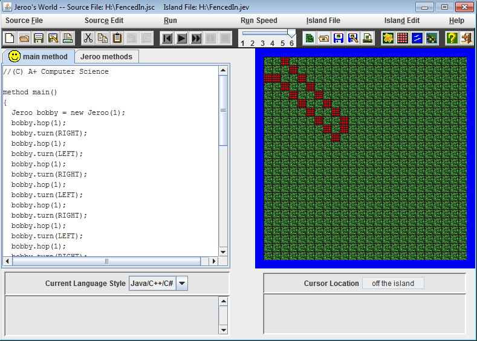
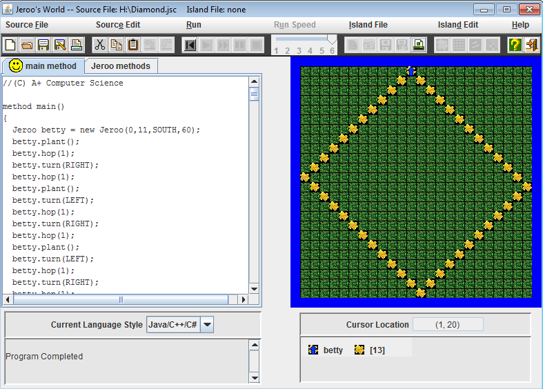
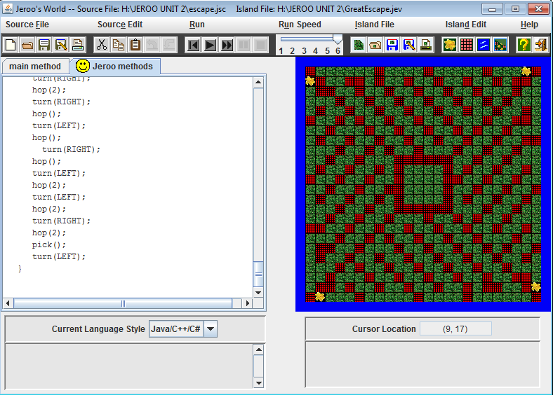
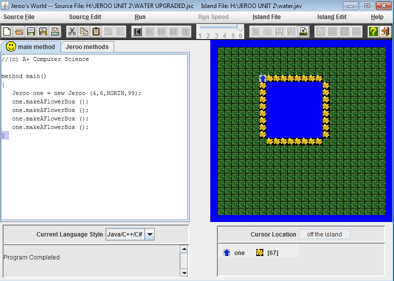
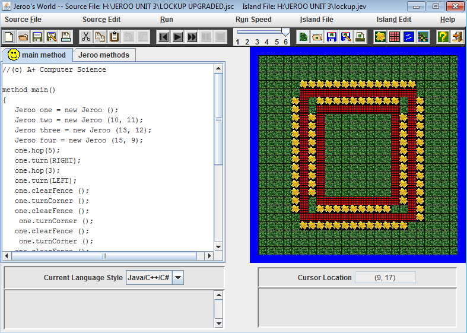
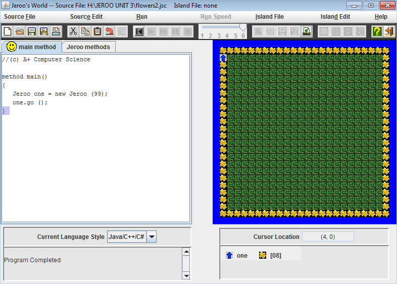
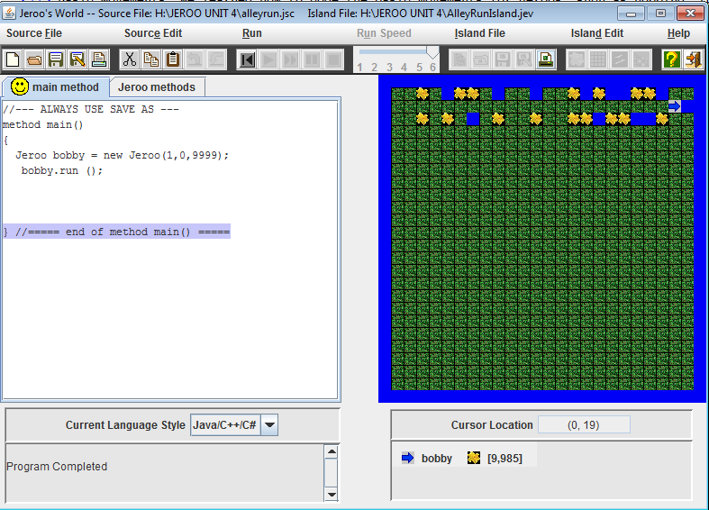
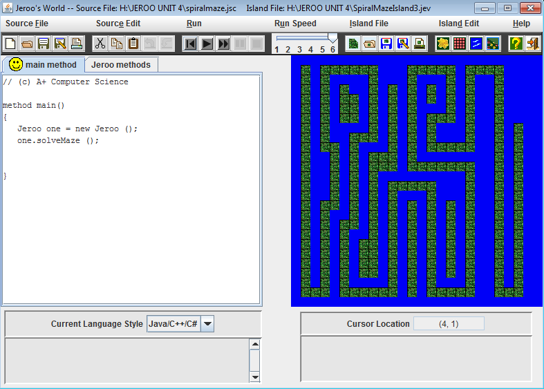

Jeroo Content
Unit 1:
FencedIn Lab:
This lab was just straight up typing commands. All I did was type a variety of hop and turn commands in order for the Jeroo to get "untrapped." I made the Jeroo spawn with 1 flower and toss it at the fence in order to make it disppear at the end.
Diamond Lab:
This lab was the most grueling of them all. Similar to the FencedIn lab, I just had to type a variety of hop, turn, and plant commands in order to get the Jeroo to plant a diamond shaped flower field.
Concepts Learned:
- Spawning: We learned how to spawn Jeroos in certain coordinates,facing certain directions, and holding a certain amount of flowers.
- Basic Movements: We learned how to code the basic movements for Jeroos, such as hopping, tossing, picking, planting, etc.
- Nets: We learned that tossing a flower at a net would make it disappear.
Unit 2:
Maze Lab:
This lab was fairly simple, all I had to do was make 1 single Jeroo movement method for all 4 Jeroos. Since the maze movements were the same for all Jeroos, it was basically just typing movement commands and constantly testing them to see if they worked properly.
Water Hazzard Lab:
This lab was the simplest of them all so far. All I had to do was make a movement method that made the Jeroo cover up one side of the lake with flowers and copy and paste that 4 times.
Concepts Learned:
- Movement methods: Compile all movements into one singular method so we can just type that instaed of all the movements.
Unit 3:
LockUp Lab:
This lab was fairly simple, because all you had to do was remove the flowers and fences so the other Jeroos can escape. I made it so that if there was a flower ahead the Jeroo would hop and pick the flower. If there was a ne tto the right the Jeroo would turn right and toss the flower. After all the nets and flowers are destroyed, the Jeroos would run to the edge of the water on the east side of the island.
Flowers Lab:
This lab was extremely easy. All you had to do was make ring of flowers that outlined the island. I made it so that while it was clear ahead, the Jeroo would plant and hop, and when there was water ahead, the Jeroo would turn right.
Concepts Learned:
- Loops: We learned to make "while" statements including the "and" and "or" transitions
Unit 4:
AlleyRun Lab:
This lab was basically just me typing conditional statements, such as if there was a net to the right, you would turn to the right and toss a flower in order to destroy it, then you would hop onto the spot where the net was and plant a flower. The goal was to pick all the flowers, plant flowers where the nets were, and plants flowers on the opposite sides of the water
SpiralMaze Lab:
This lab was a pain, because at first I could only make it loop infinitely, instead of just spiraling in and back out. I had to separate the methods and sneak in a turnLEFT in order to make it work.
Concepts Learned:
- If/Else: We learned to make if and else statements for labs.